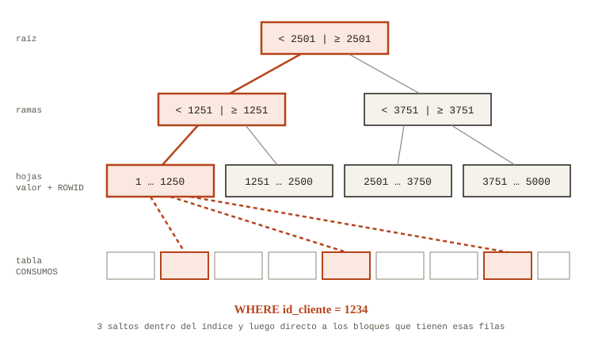
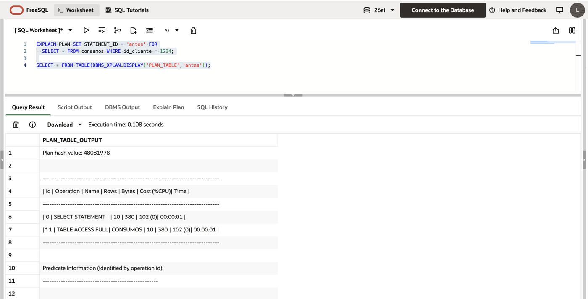
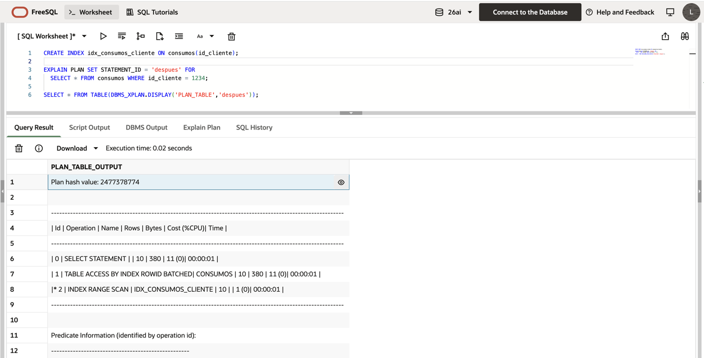

Índices: cuando "más" es peor
Cuando una consulta se pone lenta, la primera propuesta que escucho casi siempre es la misma: «pongámosle un índice». A veces es la respuesta correcta. Otras veces es como echarle agua a una sopa salada: parece que ayuda y termina dañando todo.
En estos años de soporte me he topado con tablas con más índices que columnas, con cargas nocturnas que se volvían más lentas cada mes sin que nadie supiera por qué, y con consultas que seguían haciendo full scan con su índice recién creado al lado. Esta entrada es lo que me hubiera gustado que alguien me explicara al principio.
Qué es un índice, en dos minutos
Un índice B-tree funciona como el índice alfabético al final de un libro. En vez de leer todas las páginas buscando una palabra, vas al índice, encuentras la palabra y te dice en qué página está. En Oracle, la «página» es el ROWID: la dirección física de la fila dentro de la tabla.
El índice está organizado por niveles. Arriba hay un bloque raíz, en el medio unos bloques rama que se reparten los rangos de valores, y abajo las hojas, que guardan cada valor con su ROWID. Para encontrar un valor, Oracle baja por el árbol en tres o cuatro saltos aunque la tabla tenga millones de filas.

Cuándo sí ayuda
El caso típico: los consumos de un cliente. En el esquema de prueba hay 50.000 consumos repartidos entre 5.000 clientes, así que a cada cliente le tocan 10 filas. Para ver qué piensa hacer Oracle uso EXPLAIN PLAN:
EXPLAIN PLAN SET STATEMENT_ID = 'demo_antes' FOR
SELECT id_consumo, fecha_consumo, tipo, valor
FROM consumos
WHERE id_cliente = 1234;
SELECT * FROM TABLE(DBMS_XPLAN.DISPLAY('PLAN_TABLE', 'demo_antes'));
-- Se crea el índice y se repite el EXPLAIN PLAN
CREATE INDEX idx_consumos_cliente ON consumos (id_cliente);Sin índice, el plan muestra TABLE ACCESS FULL: Oracle lee la tabla completa para quedarse con 10 filas. Con el índice, el mismo plan cambia a INDEX RANGE SCAN seguido de TABLE ACCESS BY INDEX ROWID BATCHED. Baja por el árbol, encuentra las 10 entradas y va directo a esas filas. En mi corrida en FreeSQL el costo estimado pasó de 102 a 11: casi diez veces menos, para la misma consulta y el mismo resultado.


De paso, ID_CLIENTE es llave foránea. Una llave foránea sin índice obliga a Oracle a bloquear la tabla hija completa cuando se borra o se actualiza la llave en la tabla padre. Ese bloqueo es de los que aparecen en producción a la peor hora posible.
Cuándo el índice estorba
Aquí viene la parte que le da el título a la entrada.
Un índice que no filtra no sirve. En CONSUMOS, cerca del 90 % de las filas están en estado FACTURADO. Si creas un índice sobre ESTADO y buscas las facturadas, Oracle lo ignora y hace full scan, y tiene razón: saltar del índice a la tabla 45.000 veces, bloque por bloque, cuesta más que leer la tabla de corrido. Con ese mismo índice, buscar las pocas filas en ERROR sí lo usa. Mismo índice, distinto valor, distinta decisión. Para que el optimizador distinga los dos casos necesita estadísticas con histograma sobre la columna; sin eso, asume que los valores están repartidos parejo.
Cada índice se paga en cada escritura. Un INSERT en una tabla con seis índices no es una escritura: son siete. Lo mismo con los DELETE y con los UPDATE que tocan columnas indexadas. En una operación de facturación donde los procesos nocturnos insertan muchísimas filas, cada índice «por si acaso» se cobra en la ventana del batch, todas las noches.
Hay índices que existen pero no se pueden usar. Si la consulta envuelve la columna en una función, el índice normal sobre esa columna deja de servir. La solución casi nunca es otro índice; es reescribir el WHERE:
SELECT * FROM consumos
WHERE TRUNC(fecha_consumo) = DATE '2026-09-15';SELECT * FROM consumos
WHERE fecha_consumo >= DATE '2026-09-15'
AND fecha_consumo < DATE '2026-09-16';Lo mismo pasa cuando comparas una columna VARCHAR2 contra un número y Oracle hace una conversión implícita por debajo. El índice está ahí, pero la consulta no lo puede aprovechar.
Una regla rápida
| Situación | ¿Indexar? |
|---|---|
Columna del WHERE con pocas filas por valor | Sí |
| Llave foránea | Casi siempre |
| Columna con dos o tres valores muy repetidos | Normalmente no |
| Tabla pequeña, de pocos bloques | No hace falta |
| Tabla con cargas masivas todas las noches | Con mucho cuidado |
Antes de crear un índice
Antes de crear un índice, miro el plan. Si después de crearlo el plan no cambia, lo borro. Y cada cierto tiempo vale la pena revisar qué índices nadie usa: Oracle puede llevar ese registro con ALTER INDEX ... MONITORING USAGE o, desde la 12.2, con la vista DBA_INDEX_USAGE. Siempre aparecen unos cuantos.
Los scripts completos están en sql/demo_indices.sql, incluida la prueba del índice sobre ESTADO.
La versión con dulces
Si lo del full scan que le gana al índice todavía suena raro, Chris Saxon, del equipo de Oracle, lo explica con dulces de colores. Literal: